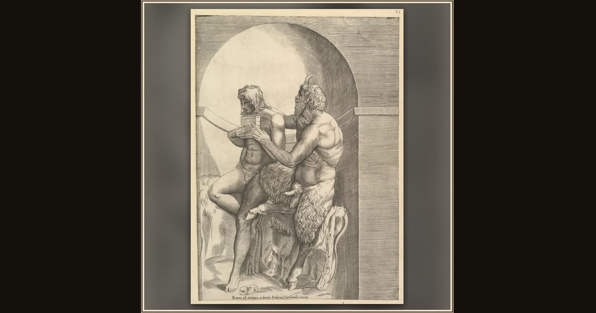

Pan Teaching the Young Olympus to Play the Flute, from "Speculum Romanae Magnificentiae"
Anonymous · ca. 1540–80 · met
The horned, goat-legged Pan helps young Olympus play reed pipes in this engraving; the hymn hears Pan play sweetly on reed pipes at evening (15). Explore its place in Homer's The Homeric Hymns, Hymn 19 · To Pan, line 15.